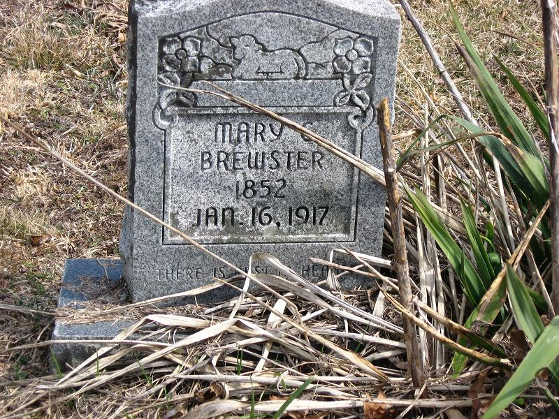

Mary Catherine Patton
12 January 1847 – 17 January 1917
Quick Facts
Immediate Family
Parents
William Patton DOCUMENTEDLucy Brown (died 26 January 1847) DOCUMENTED
Mary Catherine's parentage is documented by her own sworn statement in her 1907 Eastern Cherokee application: her father William "Bill" Patton, born in North Carolina, and her mother Lucy Brown, who died on 26 January 1847, two weeks after Mary Catherine's birth. Her legal name was Patton; she went by her mother's name, Brown. Lucy was the older daughter of Dave Brown and Polly Brown of Bledsoe County. Mary Catherine was the only child of William and Lucy.
Children
John Samuel Brewster (born 2 April 1876) DOCUMENTEDRebecca Jane "Becky Jane" Brewster McKinney (born 23 December 1877) DOCUMENTED
Mary Lurenda "Polly" Brewster Berry (born 11 January 1879) DOCUMENTED
Martin Simon Richard Brewster (born 2 January 1880) DOCUMENTED
William Alexander Brewster (born 28 March 1884; died 16 November 1957) DOCUMENTED
Charley Albert Brewster (born 20 April 1886) DOCUMENTED
Andrew "Andy" Marion Brewster (born 20 May 1888) DOCUMENTED
James Walter Brewster (born 20 November 1890) DOCUMENTED
Jesse Washington Brewster, Sr. (born 15 October 1893) DOCUMENTED
Jacob Abraham Brewster (born 30 September 1895) DOCUMENTED
Roster and birth dates follow Mary Catherine's own sworn list in her 1907 Eastern Cherokee application; the 1900 census confirms ten children, ten living. Geni's grids list twelve children, adding a "Private Brewster" and a "Jane Ellen McKinney" — neither appears in the sworn list or the 1900 count, and Jane Ellen likely duplicates Rebecca Jane (both shown married McKinney); neither is carried on this card. Geni also carries duplicate profiles for several children linked from Mary's profile; the links here use the father's grid. The 1900 census sons "Chas A" and "Walter J" read as Charley Albert and James Walter.
Siblings
Sarah Patton (half-sister) SUPPORTEDRafe Patton (half-brother) SUPPORTED
Jesse Patton (half-brother) SUPPORTED
Nancy Patton (half-sister) SUPPORTED
Andrew Ralph Patton (half-brother) SUPPORTED
Half-siblings as shown on Mary Catherine's Geni profile, sharing her father William Patton; they are not named in her sworn application. Mary Catherine was the only child of William Patton and Lucy Brown.
Gallery

On Family Tree Sites
Life Timeline
12 January 1847 · age 0
Born, Sequatchie Valley, Tennessee DOCUMENTED (her own sworn statement; her death certificate gives 12 January 1848)
26 January 1847 · age 0
Her mother Lucy Brown died, two weeks after her birth DOCUMENTED (her own sworn statement)
About 1875 · age 28
Married James Thomas Brewster, probably Morgan County UNPROVED (no record survives)
1876–1895 · ages 29–48
Ten children born at Brewstertown, from John Samuel to Jacob Abraham DOCUMENTED (her sworn list; 1900 census: ten children, ten living)
9 September 1907 · age 60
Swore out her Eastern Cherokee application at Rugby, witnessed by her father-in-law John "Preacher Johnny" Brewster; rejected on procedure alone, filed nine days past the deadline DOCUMENTED
17 January 1917 · age 70
Died, Rugby, Morgan County, Tennessee DOCUMENTED (Tennessee death certificate; her gravestone reads 16 January)
20 January 1917
Buried, Nydeck Cemetery — the old name of Carpenter Cemetery — near Robbins DOCUMENTED
Life Story
Mary Catherine Patton was born on 12 January 1847 in the Sequatchie Valley of Tennessee, the only child of William "Bill" Patton, born in North Carolina, and Lucy Brown. Her mother died on 26 January 1847, two weeks after her birth. She was raised in part alongside her maternal uncle Thomas Brown, and she went by her mother's name, Brown — her legal name was Patton, and she is called Mary Catherine Patton here until her marriage. Her grandfather Pompey Brown is named in her own sworn statement as a full-blooded Cherokee; that rests on her oath alone.
About 1875 she married James Thomas Brewster, probably in Morgan County, though no marriage record survives: the Fentress courthouse burned in 1904 and Morgan County's records burned three times. Around 1880 James, Mary Catherine, and his father settled the hollow near Rugby that became Brewstertown, where James ran the ferry at Brewster Ford on the Clear Fork. Mary Catherine raised ten children at Brewstertown — John Samuel, Becky Jane, Polly, Martin Simon, William Alexander, Charley Albert, Andy Marion, James Walter, Jesse Washington, and Jacob Abraham — and the 1900 census counts ten children, ten living.
On 9 September 1907, at Rugby, she swore out Eastern Cherokee application No. 43484, witnessed by her father-in-law John "Preacher Johnny" Brewster, naming her parents, her children, and her grandfather Pompey Brown. The application was rejected on procedure alone, filed nine days past the 31 August 1907 deadline; the rejection does not impeach the genealogy she stated. She died on 17 January 1917 at Rugby, aged seventy, and was buried on 20 January 1917 at Nydeck — the old name of Carpenter Cemetery — near Robbins. The photograph above is a faded old photograph of Mary Catherine and James together, from the Brewster reunion group.
Sources and Evidence
- Eastern Cherokee application No. 43484 (NARA M1104, Reel 332), sworn 9 September 1907 at Rugby, witnessed by John "Preacher Johnny" Brewster: born 12 January 1847, Sequatchie Valley; father William Patton, born North Carolina; mother Lucy Brown, died 26 January 1847; ten children with birth dates; grandfather Pompey Brown named as a full-blooded Cherokee; rejected on procedure alone, nine days past the 31 August 1907 deadline DOCUMENTED
- Tennessee death certificate, Morgan County Vol. 37, cert. 396 (FamilySearch record N91L-JL3): died 17 January 1917, Rugby, Morgan County, age 69 years 6 days, married, housekeeper, cause "Paralysis," no doctor; father Bill Patton; mother's maiden name Brown; buried Nydeck, 20 January 1917, undertaker Jim Berry, Rugby DOCUMENTED
- 1900 census, Morgan County ED 109, household 193: ten children, ten living; married 25 years; sons "Chas A" and "Walter J" at home read as Charley Albert and James Walter DOCUMENTED
- Geni profile, click-verified 4 November 2026: born 12 January 1847 (field date only; About text gives Sequatchie Valley); died 16 January 1917, Rugby; buried Carpenter Cemetery, Morgan County; parents William Patton and Lucy Brown; spouse James Thomas Brewster; twelve children in the grid including a "Private Brewster" and a "Jane Ellen McKinney" not in the sworn list SUPPORTED
- Find a Grave memorial 34506630: Mary Catherine Patton Brewster, born 1852 Cumberland County, died 16 January 1917 Rugby, buried Carpenter Cemetery, Morgan County; spouse James Thomas Brewster; bio note records the death certificate and stone conflict SUPPORTED
- Marriage about 1875: no record; 1900 census "married 25 years" and a 1997 research query both give about 1875, probably Morgan County; a FamilySearch entry of 1874 at Elgin, Scott County is pre-existing and unsourced, and is not adopted UNPROVED
Grades: DOCUMENTED an original record says it · SUPPORTED several records point to it · FAMILY ACCOUNT the family's own telling · UNPROVED a lead, not proved.
Research Notes and Open Questions
- Birth: her own sworn statement gives 12 January 1847, Sequatchie Valley; her death certificate gives 12 January 1848, Cumberland County; the 1900 census implies January 1851; her gravestone and Find a Grave give 1852. The page uses her own sworn date and carries the rest. The death certificate's birthplaces for her parents ("Cumberland") are read as informant approximation against her oath (father born North Carolina, mother born Sequatchie Valley).
- Death: the death certificate gives 17 January 1917; her gravestone, Geni, and Find a Grave give 16 January 1917. The page uses the certificate (state record, image on file) and carries the stone's date as a conflict. Trees previously carried 16 January, one day off the certificate.
- Burial: Nydeck on the certificate is the old name of Carpenter Cemetery, so the burial is documented — the couple profile predates the certificate find and still says no death record was found. The older "before 1920 (about 1917 — unproved)" dating is superseded by the certificate.
- Two Lucys: the 1850 census Lucy, 19, is Mary Catherine's younger sister — her aunt — not her mother. The mother Lucy was the older daughter of Dave Brown and Polly Brown of Bledsoe County. An earlier hypothesis dating the mother's death to 1852 was withdrawn.
- Cherokee ancestry: her grandfather Pompey Brown, "a full-blooded Cherokee Indian," rests on her oath alone — a single source. The application's rejection was procedural only (nine days late) and does not impeach the genealogy stated.
- Children: the card follows her sworn list of ten. Geni's grids add a "Private Brewster" and a "Jane Ellen McKinney," and Mary's profile links duplicate profiles for several children; Find a Grave's list matches the sworn ten with name variants. The extras are not adopted and are flagged for a ruling.
- Half-siblings: five half-siblings are shown on her Geni profile, sharing her father William Patton; they are not named in her sworn application and are carried here as half-siblings only.
- Marriage: about 1875, probably Morgan County, is unproved — no record survives the courthouse fires. The FamilySearch 1874 Elgin, Scott County entry is not adopted.
- Photographs: no portrait of Mary Catherine alone has been found; the hero photograph shows Mary Catherine and James together in a faded old photograph from the Brewster reunion group. Place photographs in the folder (bridges, ferry sites, cemetery entrances, the store) are not shown on this page. The application page images in the folder are documents, cited here, not gallery pictures.
- The shared edit box carried on earlier generation pages is not shown here: no shared document for this generation has been confirmed. Corrections can go in the couple folder.
Profile history: Created 4 November 2026 from the family couple profile and research notes.